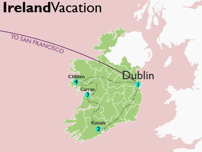

Lab 1
{kind=link}
Ireland Vacation Map
Route taken on Nick Perdue's Ireland vacation.Download Image
Geography Major - Watershed Resource Policy, Geospatial Analysis, and Journalism Minors
Personal Statement: Years of traveling the U.S. Southwest has inspired me to become active in contributing to the health of the many amazing ecosystems that I had the opportunity to explore. My upper division studies at HSU revealed my tendency to focus on water-related issues.
Study Interests: Improving preventative management with better monitoring practices; making science and conservation easy to implement for the general public.
This page is a portfolio for work completed in Humboldt State University's GSP 316.
Route taken on Nick Perdue's Ireland vacation.Download Image
Geared towards elementary Students learning states and capitals. Emphasis placed on capital names.Download Image
Shows the ideal places to nap on the HSU campus.Download Image
Map showing False Cypress trees and recycling centers. Cypress trees are a symbol of mourning. This map is meant to express the false sense of caring about the natural environment that recycling gives.Download Image
Navigate beer breweries along the Humboldt Coast. Download Image
This map visualizes areas important to Klamath and Modoc beliefs about the formation of Crater Lake.Download Image

Describe some aspects of the map here. Download Image
Describe some aspects of the map here. Download Image
Describe some aspects of the map here. Download Image
Describe some aspects of the map here. Download Image
Humboldt County on Terrain
Drop me a line
{kind=link}
{kind=link}
{kind=link}
{kind=link}
{kind=link}